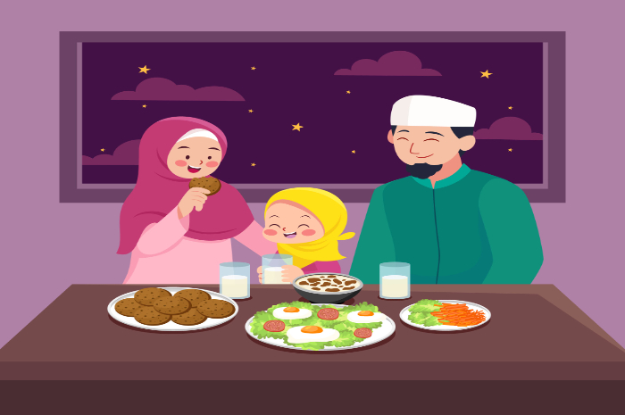

Puasa sunnah Senin dan Kamis adalah amalan rutin yang sangat dianjurkan oleh Rasulullah ﷺ. Amalan ini tidak hanya memberikan manfaat spiritual, tetapi juga kesehatan jasmani. Melaksanakan puasa sunnah ini merupakan bentuk kecintaan kita dalam menghidupkan sunnah Nabi di kehidupan sehari-hari.
Dalil Dasar Puasa Senin Kamis
Ketika Rasulullah ditanya mengenai puasa hari Senin, beliau bersabda: "Itu adalah hari kelahiranku, hari aku diutus atau diturunkan wahyu kepadaku." (HR. Muslim). Sementara mengenai hari Kamis, beliau bersabda: "Amal-amal perbuatan dipersembahkan pada hari Senin dan Kamis." (HR. Tirmidzi).
Doa Berbuka Puasa:
ذَهَبَ الظَّمَأُ وَابْتَلَّتِ الْعُرُوقُ، وَثَبَتَ الأَجْرُ إِنْ شَاءَ اللَّهُ
"Dzahabaz zhama’u wabtallatil ‘uruuqu wa tsabatal ajru, insya Allah"
(Telah hilang rasa haus, kerongkongan telah basah, dan pahala telah ditetapkan, insya Allah).
Manfaat Spiritual
- Pengampunan Dosa: Pada hari tersebut, pintu-pintu surga dibuka dan dosa-dosa hamba yang tidak menyekutukan Allah akan diampuni.
- Peningkatan Iman: Melatih kesabaran, kedisiplinan diri, dan memperkuat ketakwaan kepada Allah SWT.
- Amal Diangkat: Rasulullah ﷺ menyukai saat amalnya diangkat dan dipersembahkan kepada Allah dalam keadaan berpuasa.
Wallahu a'lam bish-shawab.